🔬 Исследования
- 🏗️ Ветка «Разработать» — подробно гайд 🏗️ ВЕТКА «РАЗРАБОТАТЬ» Эта ветка помогает развивать базу, войска и ключевые игровые процессы. По мере прокачки вы получ…
- 💰 Ветка «Экономика» — подробно гайд 💰 ВЕТКА «ЭКОНОМИКА» Эта ветка помогает укрепить ресурсную основу развития и получать больше пользы от каждой добычи. По…
- 🦸 Ветка «Герой» — подробно гайд 🦸 ВЕТКА «ГЕРОЙ» Эта ветка усиливает общие характеристики героев и работает на развитие всех классов. По мере прокачки в…
- 🪖 Ветка «Солдаты» — подробно гайд 🪖 ВЕТКА «СОЛДАТЫ» Эта ветка усиливает боевые и практические характеристики ваших войск. По мере прокачки вы улучшаете:…
🔬 ОБЩЕЕ РАЗЪЯСНЕНИЕ ИССЛЕДОВАНИЙ Исследования - это возможность поэтапно усиливать героев и солдат, ускорять строительство и сами исследования, сокращать затраты на строительство и улучшения, увеличивать объём производства ресурсов и многое другое. 🌳 Все улучшения разделены на различные ветки, и каждая ветка отвечает за своё направление развития аккаунта. 💰 Каждое исследование требует затрат ресурсов: 🌾 пшено ⚙️ металл 🛢️ нефть 📊 Научные данные 💡 Изучайте ветки постепенно и выбирайте приоритеты в зависимости от вашего стиля игры: развитие, экономика, атака или оборона.
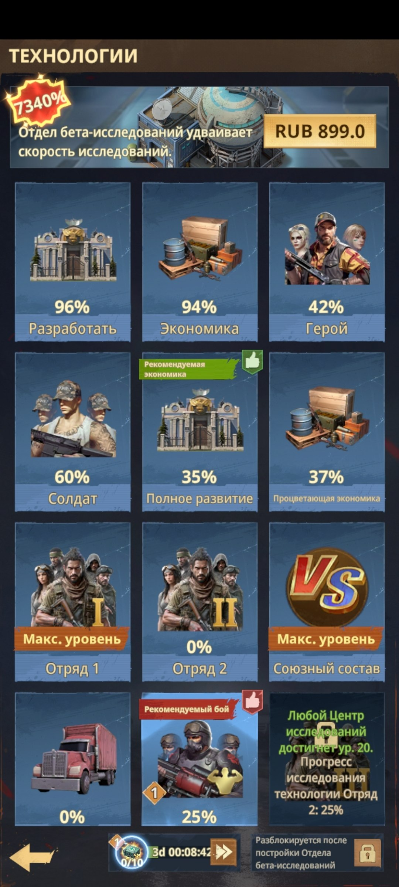
🔬 Общие разделы исследований
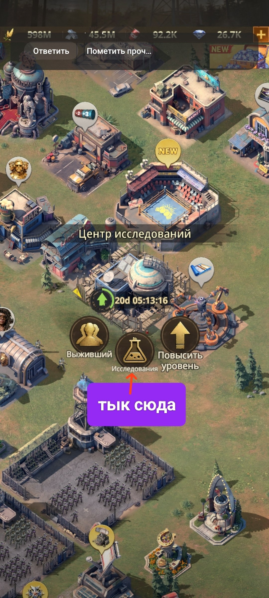
🏛️ Центр исследований
🏗️ ВЕТКА «РАЗРАБОТАТЬ» Ветка помогает развивать базу, войска и ключевые игровые процессы. 🏗️ Увеличивает скорость строительства. 💰 Снижает расходы ресурсов на строительство и улучшения. 💉 Ускоряет лечение раненых солдат в Госпиталях. 🪖 Увеличивает количество одновременно тренируемых солдат на Полигоне. ⚙️ Даёт дополнительные бонусы развития связанных механик. 💡 Подходит для ускорения общего прогресса аккаунта.

🏗️ Выбор ветки «Разработать»

🌳 Дерево исследований ветки «Разработать»
💰 ВЕТКА «ЭКОНОМИКА» Ветка усиливает ресурсную основу развития и помогает получать больше пользы от каждой добычи. ⛏️ Увеличивает скорость сбора. ⏱️ Сокращает время производства ресурсов. 📦 Увеличивает объём производства. 🌾 Усиливает производство и сбор пшена. ⚙️ Улучшает процессы, связанные с металлом. 🛢️ Повышает эффективность производства и сбора нефти. 💡 Особенно полезна для стабильного развития и постоянного запаса ресурсов.
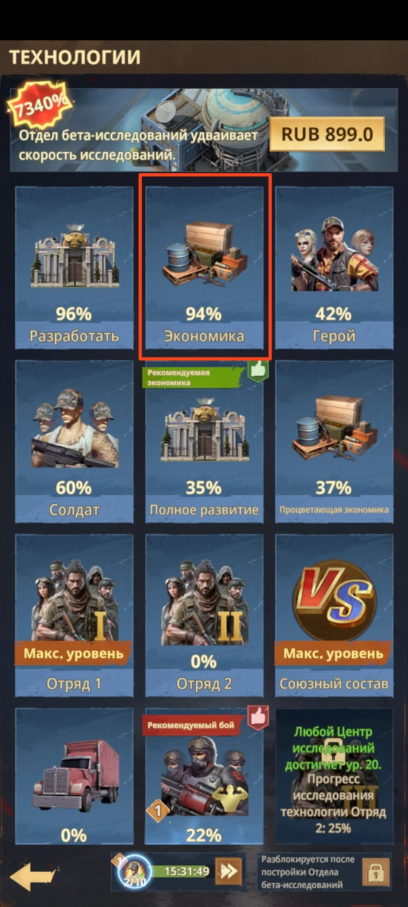
💰 Выбор ветки «Экономика»
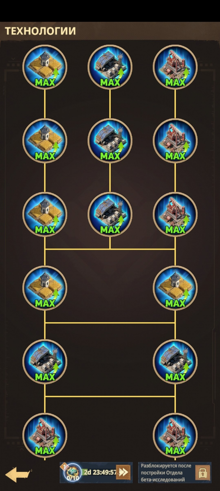
🌾 Дерево исследований ветки «Экономика»
🦸 ВЕТКА «ГЕРОЙ» Ветка улучшает общие характеристики героев и работает для всех классов. ❤️ Увеличивает общее здоровье. 🛡️ Усиливает общую защиту. ⚔️ Повышает общий урон. ✨ Даёт общее усиление эффективности героев. 💡 Бонусы полезны для атакующих, защитных и вспомогательных героев независимо от выбранного состава.
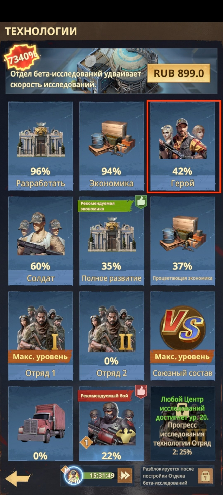
🦸 Выбор ветки «Герой»
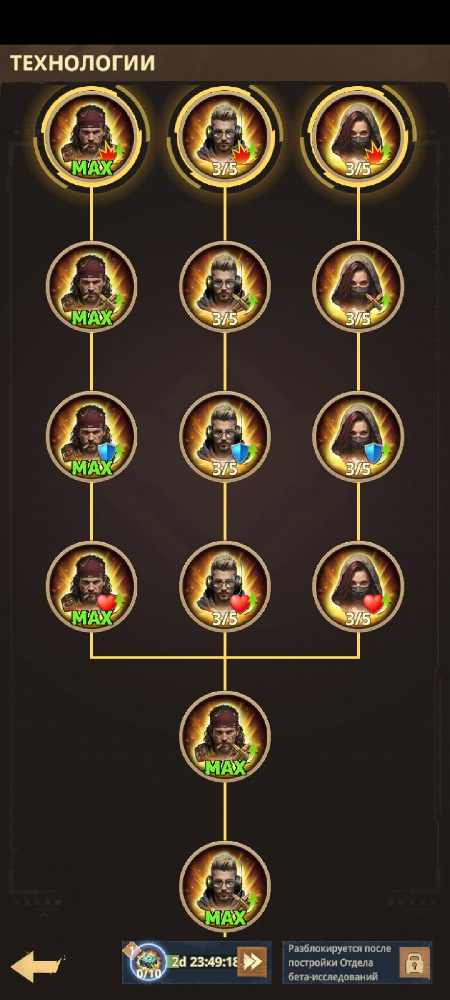
🌳 Дерево исследований ветки «Герой»
🪖 ВЕТКА «СОЛДАТЫ» Ветка усиливает боевые и практические характеристики ваших войск. ❤️ Увеличивает общее здоровье солдат. 🛡️ Усиливает общую защиту. ⚔️ Повышает общий урон. 📦 Увеличивает грузоподъёмность войск. 💡 Полезна для боевых составов, сборов и добычи ресурсов.
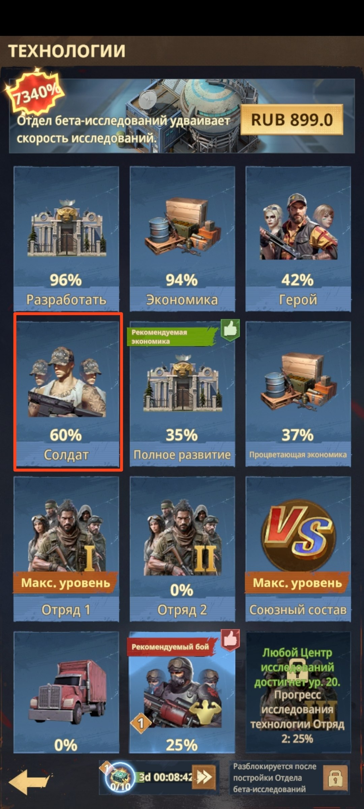
🪖 Выбор ветки «Солдаты»
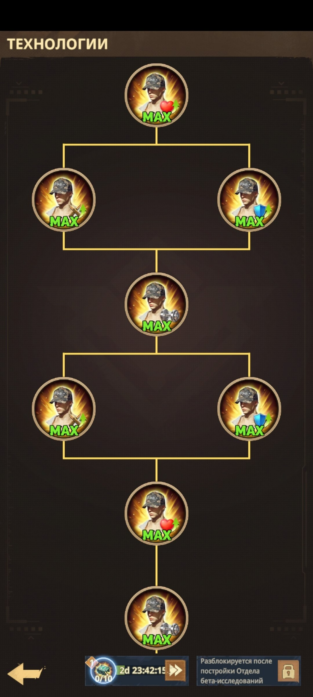
🌳 Дерево исследований ветки «Солдаты»
🏛️ ВЕТКА «ПОЛНОЕ РАЗВИТИЕ» Эта ветка объединяет ключевые бонусы развития и помогает сделать основные игровые процессы ещё эффективнее. 🏗️ Дополнительно снижает затраты на постройки. 🔬 Сокращает расходы на исследования. 💉 Уменьшает затраты на лечение раненых. 🪖 Снижает расходы на тренировки солдат. 🏥 Увеличивает вместимость Госпиталя. 👥 Повышает количество одновременно тренируемых солдат. ⚡ Увеличивает скорость строительства, исследований и лечения. ✨ Даёт дополнительные бонусы для комплексного развития базы и армии.
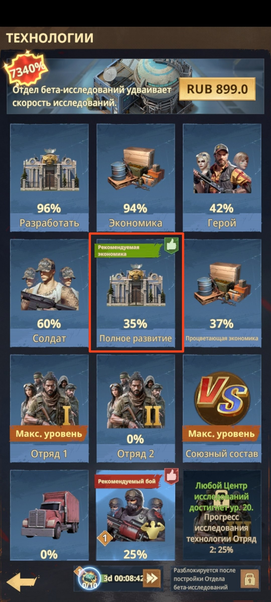
🏛️ Выбор ветки «Полное развитие»
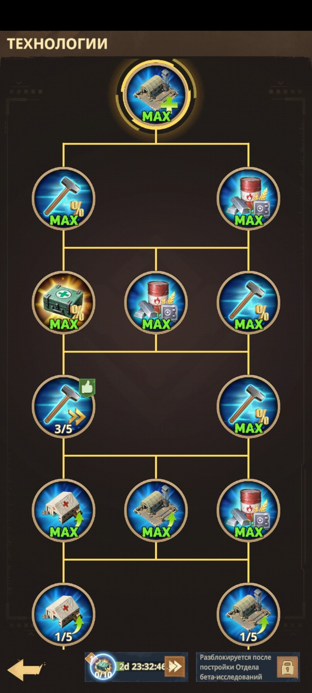
🌳 Дерево исследований ветки «Полное развитие»
🌾 ВЕТКА «ПРОЦВЕТАЮЩАЯ ЭКОНОМИКА» Эта ветка ещё сильнее развивает всё, что связано с производством ресурсов, и помогает поддерживать стабильный запас материалов для дальнейшего роста. 🌾 Усиливает производство и сбор пшена. ⚙️ Повышает эффективность производства и сбора металла. 🛢️ Улучшает производство и добычу нефти. 📦 Увеличивает отдачу от ресурсных зданий и производственных процессов. ⛏️ Помогает получать больше ресурсов за тот же период времени.
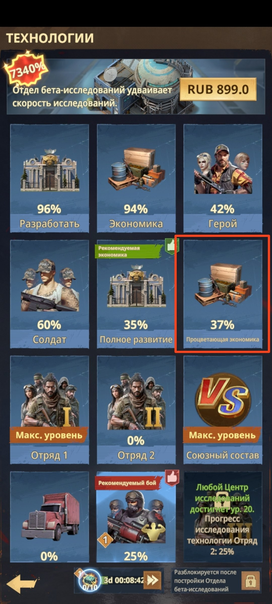
🌾 Выбор ветки «Процветающая экономика»
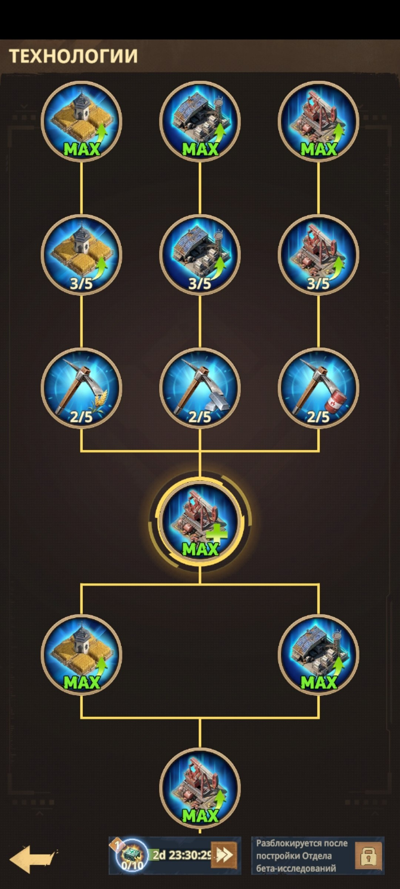
🌳 Дерево исследований ветки «Процветающая экономика»
🏳️ ВЕТКА «ОТРЯД 1» На этой странице разобраны бонусы веток отрядов. Принцип одинаков для Отряда 1, Отряда 2, Отряда 3 и Отряда 4. ⛏️ Скорость сбора - ресурсы добываются быстрее. 🏃 Скорость похода - быстрее добираетесь к зомби, Наблюдателям, другим игрокам и ресурсным плиткам. 📦 Грузоподъёмность - отряд может переносить больше ресурсов. ⚔️ Атака - улучшаются характеристики героев при нападении на базы других игроков. 🛡️ Защита - усиливаются герои и отряд при защите собственной базы. 💡 Ветка показана на примере Отряда 1, но те же преимущества относятся и к Отрядам 2, 3 и 4. Прокачивайте их по мере открытия, чтобы получить больше возможностей для параллельных походов, атак и сбора ресурсов.
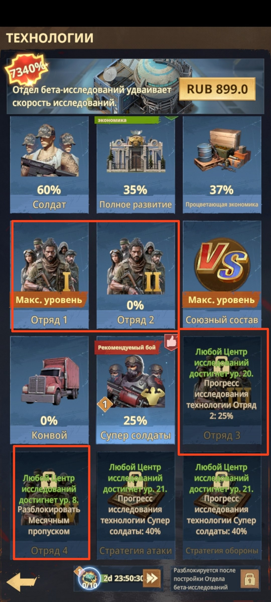
🏳️ Отряды в меню технологий
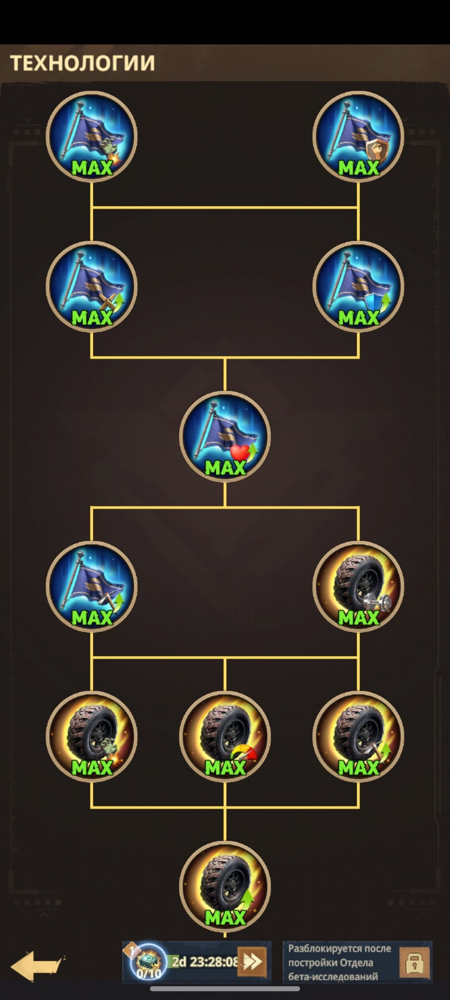
🌳 Дерево исследований отряда
🏆 ВЕТКА «VS - СОЮЗНЫЙ СОСТАВ» Все исследования этой ветки направлены на то, чтобы получать больше очков VS за выполнение тех же заданий. 🏆 Больше очков VS - повышайте результат за привычные задания и быстрее продвигайтесь по шкале наград. 📦 Больше наград - ветка помогает получать все сундуки и награды события. 📊 Научные данные - именно здесь начинается их расходование на проведение исследований. 🚀 Рекомендация для новичков Как только вы впервые начнёте участвовать в VS, сначала прокачайте эту ветку по рекомендациям. Так вы сможете открыть все сундуки с наградами. После этого переводите ветку в полный приоритет и развивайте её дальше. 💡 Это одна из самых важных веток для регулярного участия в VS: она повышает отдачу от уже выполняемых заданий.
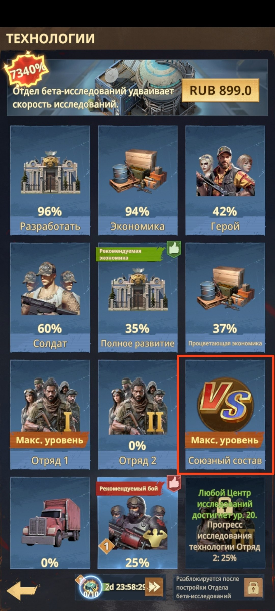
🏆 Выбор ветки «VS - Союзный состав»
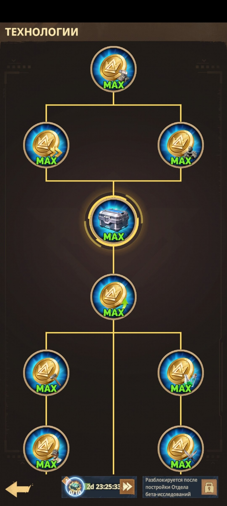
🌳 Дерево исследований ветки VS
🚚 ВЕТКА «КОНВОЙ» Ветка посвящена транспортникам и помогает сделать работу грузовиков безопаснее и выгоднее. 🛡️ Защита грузовиков - снижает риск грабежа собственных грузовиков. ⏱️ Скорость прибытия - ускоряет время прибытия транспортников. 📦 Вместимость - увеличивает объём наград и ресурсов, которые можно перевозить. 🔁 Возврат награды - открывает возможность вернуть какую-либо украденную награду. 🏅 Элитный тягач - появляется шанс получить элитный тягач, который можно ограбить только один раз. 📊 Научные данные - все исследования этой ветки полностью требуют Научных данных. 💡 Ветка особенно полезна игрокам, которые регулярно используют транспортников и хотят снизить потери, ускорить получение грузов и увеличить ценность каждой поездки.
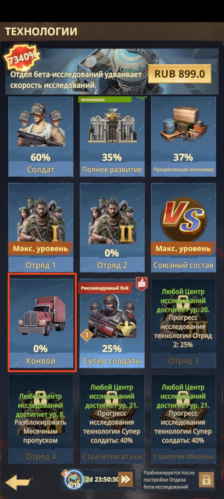
🚚 Выбор ветки «Конвой»
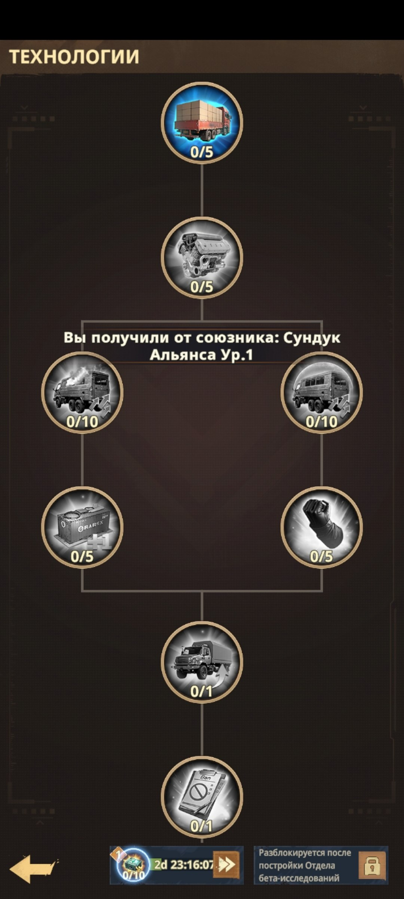
🌳 Дерево исследований ветки «Конвой»
🪖 ВЕТКА «СУПЕРСОЛДАТЫ» Это продвинутая ветка для комплексного усиления солдат по всем основным характеристикам. ❤️ Улучшает здоровье солдат. 🛡️ Повышает защиту. ⚔️ Увеличивает урон. 📦 Улучшает грузоподъёмность и практическую эффективность войск. ✨ Постепенно усиливает солдат сразу по нескольким направлениям. ⏳ Прокачка ветки займёт много времени, но результат того стоит: армия станет заметно сильнее и универсальнее. 📊 Все исследования этой ветки полностью требуют Научных данных. 💡 Рассматривайте «Суперсолдат» как долгосрочную инвестицию в силу войск и общий боевой потенциал армии.
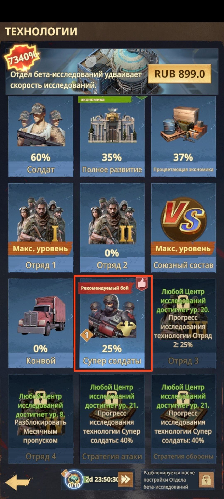
🪖 Выбор ветки «Суперсолдаты»
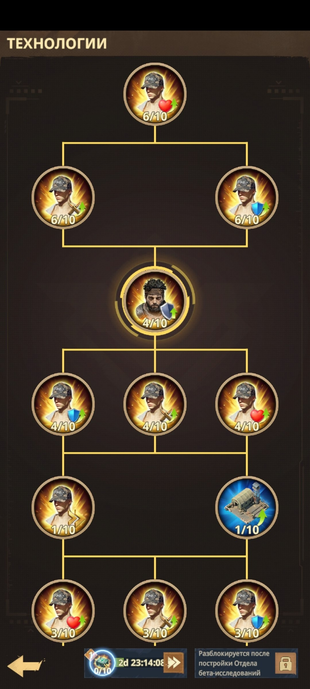
🌳 Дерево исследований ветки «Суперсолдаты»
⚔️ ВЕТКА «СТРАТЕГИЯ АТАКИ» Ветка посвящена усилению наступательной мощи и помогает эффективнее атаковать вражеские отряды и Базы. 🦸 Герои в атаке - ещё сильнее улучшает характеристики героев при нападении на вражеские отряды и Базы. 🏃 Скорость похода - ускоряет передвижение войск к противнику и сокращает время прибытия армии к цели. 🪖 Лимит тренировки - увеличивает количество солдат, которых можно тренировать за один раз. 🏟️ Вместимость Полигона - расширяет возможности Полигона и позволяет одновременно обучать больше бойцов. 📈 Дополнительные бонусы - постепенно усиливают наступление и делают каждый поход более результативным. 💡 Приоритет этой ветки особенно важен для игроков, которые активно участвуют в атаках, VS и боевых событиях.
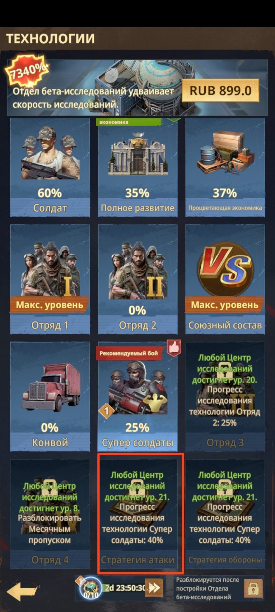
⚔️ Выбор ветки «Стратегия атаки»
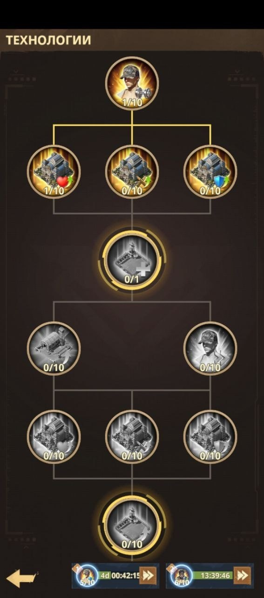
🌳 Дерево исследований ветки «Стратегия атаки»
🛡️ ВЕТКА «СТРАТЕГИЯ ОБОРОНЫ» Ветка помогает защитить вас и вашу Базу от атак вражеских отрядов и сохранить армию и ресурсы. 🦸 Герои в обороне - улучшает общие характеристики героев, когда противник атакует вас или вашу Базу. 🏥 Вместимость Госпиталя - увеличивает количество раненых солдат, которых можно одновременно разместить на лечении. 💰 Защита ресурсов - повышает лимит ресурсов, защищённых от разграбления при нападении на вашу Базу. ❤️ Снижение смертности - сокращает количество солдат, которые погибают во время обороны, и помогает сохранить войска. 🏰 Прочность обороны - постепенно усиливает защиту Базы и повышает шансы пережить вражеский натиск. 📈 Дополнительные бонусы - улучшают выживаемость армии и эффективность защиты в боевых столкновениях. 💡 Ветка особенно важна игрокам, которые часто становятся целью атак и хотят надёжно защищать Базу, ресурсы и солдат.
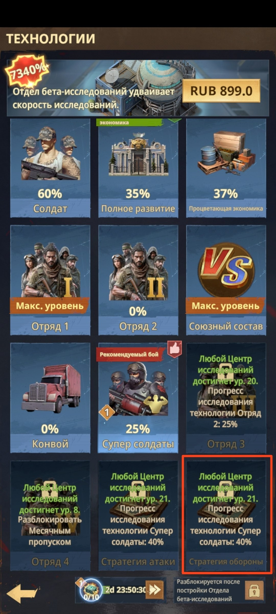
🛡️ Выбор ветки «Стратегия обороны»
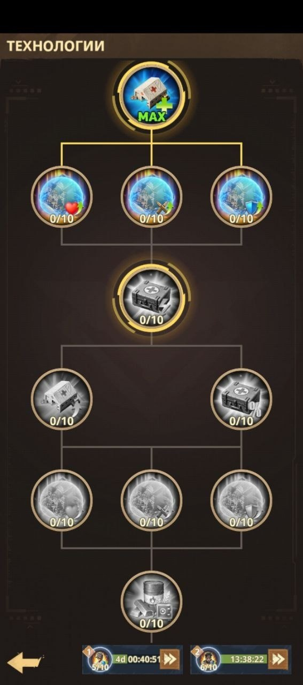
🌳 Дерево исследований ветки «Стратегия обороны»